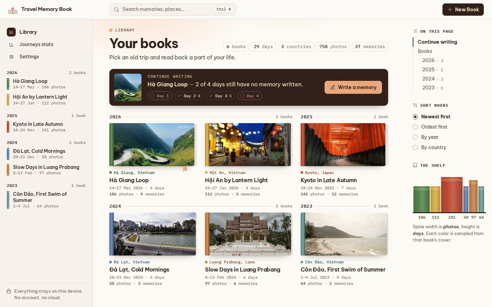
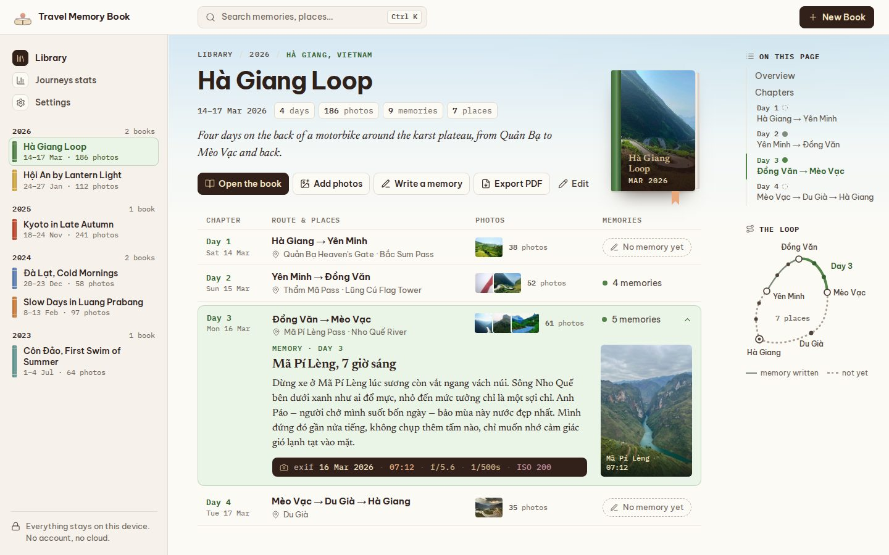
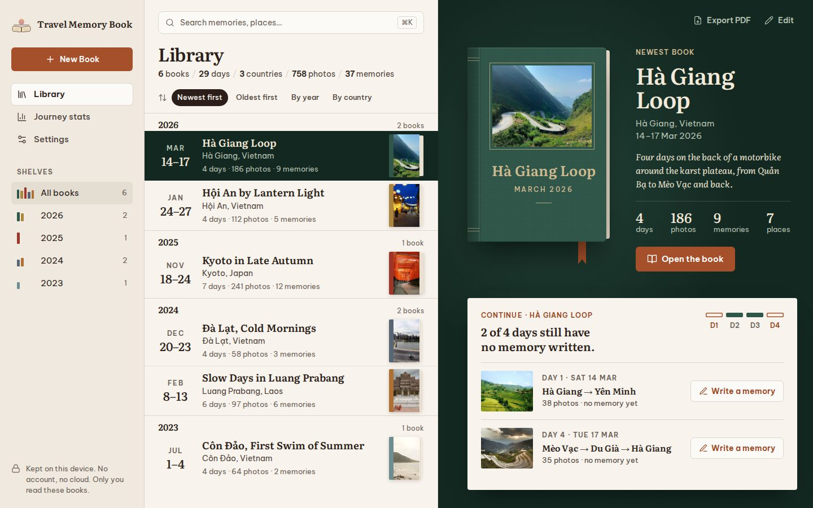
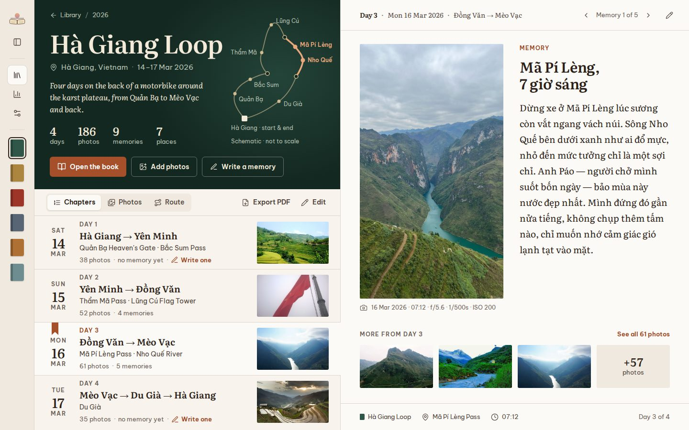
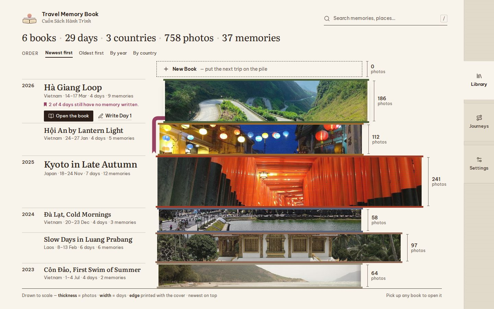
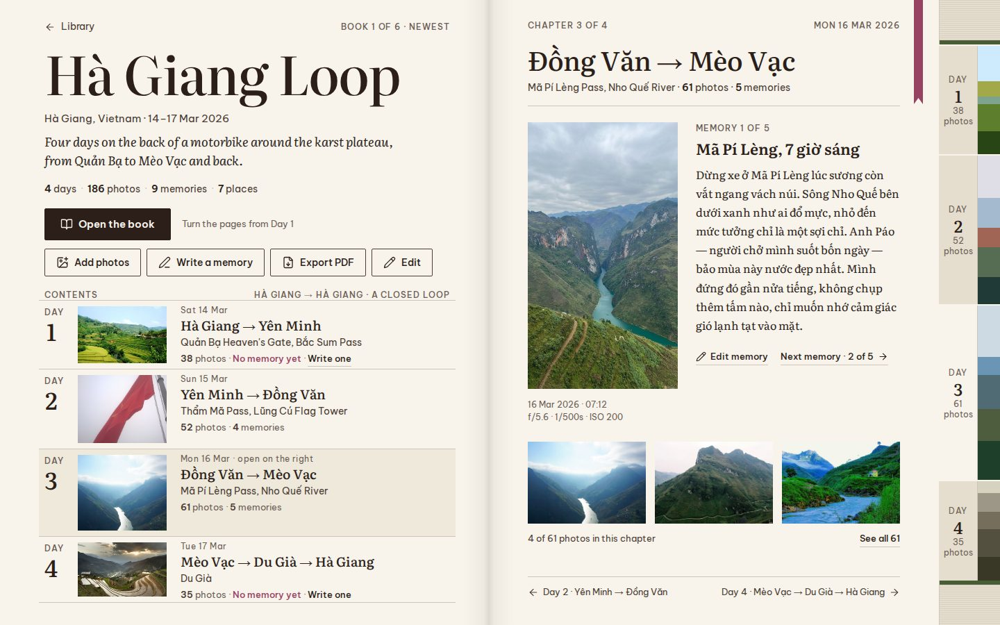

Travel Memory Book: ba hướng UI/UX
Mỗi hướng có 2 màn 1440×900: Thư viện và Hà Giang Loop. Bấm vào ảnh để mở file HTML gốc. Dữ liệu là bản demo; ảnh lấy từ Wikimedia Commons (xem assets/CREDITS.md).
#15 Utility-First Colorful Docs


Thư viện được trình bày như một bộ tài liệu về đời mình: mỗi cuốn một màu lấy từ ảnh bìa của chính nó, khối mã đổi thành da bìa với chữ nhũ. Hướng này hợp nhất cho phần "làm việc sau chuyến đi" vì đọc lướt nhanh và thao tác gọn.
Day One (Apple Design Award 2014)


Mượn từ một app nhật ký riêng tư có in sách và đã đoạt giải: bố cục ba ô, mỗi cuốn một màu vải. Hướng này cân bằng nhất giữa dùng hằng ngày và cảm xúc.
Irma Boom


Coi cuốn sách là vật thể: mọi kích thước trên màn hình đều là dữ liệu của chuyến đi. Đây là hướng mang tính tác giả và hoài niệm nhất, nhưng cũng xa quy ước UI nhất.